GENRE: FANTASY is defined by both circumstance and setting inside a fictional universe with an unrealistic set of natural laws. The possibilities of fantasy are nearly endless, but the movies will often be inspired by or incorporate human myths.
The genre often adheres to general human psychology and societal behaviour while incorporating non-scientific concepts like magic, mythical creatures, and supernatural elements.
What sets fantasy apart from other genres is its untethering from reality. Stories may speak to the actual human condition, but they do so with fantastical elements such as magic (the existence or absence of which can play a large role in stories); prophecies of a “chosen one” or an impending doom; ancient mythologies from around the globe; reimagined Medievalism; and the creation of entirely new worlds, races, and creatures. While all writing requires imagination, fantasy is a playground for those who want to push the limit of theirs.
AUDIENCE RECEPTION: ⭐⭐⭐⭐/5, GOODREADS https://www.goodreads.com/book/show/61356477-the-moth-keeper?from_search=true&from_srp=true&qid=wjc3OGi93y&rank=1
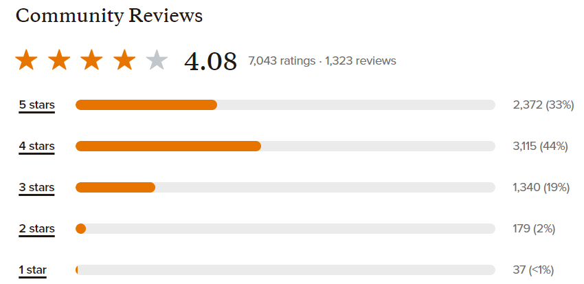
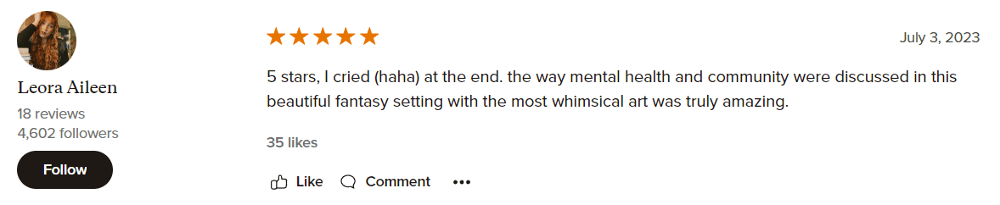
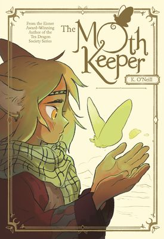
THE MOTH KEEPER GRAPHIC NOVEL by Kay O'Neil, 2023
AUDIENCE RECEPTION: ⭐⭐⭐⭐/5, GOODREADS https://www.goodreads.com/book/show/61356477-the-moth-keeper?from_search=true&from_srp=true&qid=wjc3OGi93y&rank=1
"The Moth Keeper" is a fantasy graphic novel that immerses readers in a world where magical creatures coexist with humans, exploring themes of friendship, courage, and the power of self-discovery. The plot follows a young protagonist named Anya who is finally a Moth Keeper, the protector of the lunar moths that allow the Night-Lily flower to bloom once a year, a flower her village needs to continue thriving . Through Anya's journey, the graphic novel employs media codes and conventions typical of the fantasy genre, such as richly detailed illustrations depicting fantastical landscapes and creatures, intricate world-building that establishes the rules and lore of the magical realm, entirely independent of our own, and narrative techniques that weave together elements of mystery, adventure, and self-discovery.
AUDIENCE RECEPTION: ⭐⭐⭐⭐/5, GOODREADS https://www.goodreads.com/book/show/56978077-the-well?from_search=true&from_srp=true&qid=bsPdTETXUj&rank=1
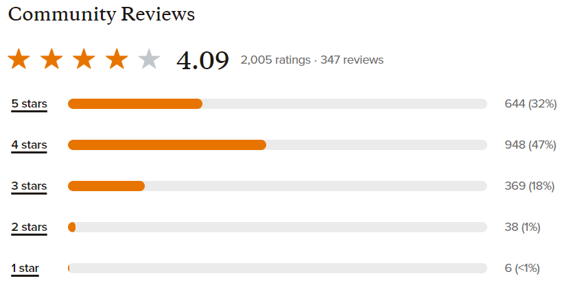
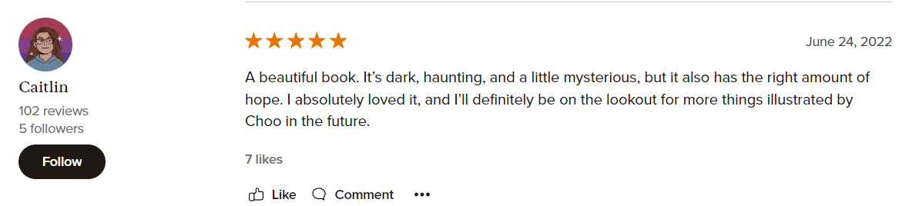
THE WELL GRAPHIC NOVEL by Jake Wyatt & Choo, 2022
"The Well" by Jake Wyatt is undoubtedly a fantasy graphic novel, evident through its intricate plot and fantastical elements. The story follows Lizzy, also known as Li-Zhen, who lives a simple life on an archipelago caring for her grandfather and their goats. However, her life takes a drastic turn when she steals coins from a sacred well to cover a debt, leading to a curse that requires her to grant three wishes to break free. As Lizzy embarks on her adventure, she uncovers hidden memories, bestows great wealth, and confronts magical secrets that threaten her family's existence. The addition of elements of a "sacred well" and matter of a breaking a curse through wishes is something not of reality, but imagination further pushing the fantasy genre. Ultimately through captivating storytelling and magical elements, "The Well" explores the power and limits of wishes, making it a captivating addition to the fantasy genre.
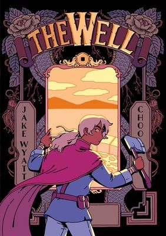
AUDIENCE RECEPTION: ⭐⭐⭐⭐/5, GOODREADS https://www.goodreads.com/book/show/57094282-tidesong?from_search=true&from_srp=true&qid=Qg03W0UiXH&rank=1
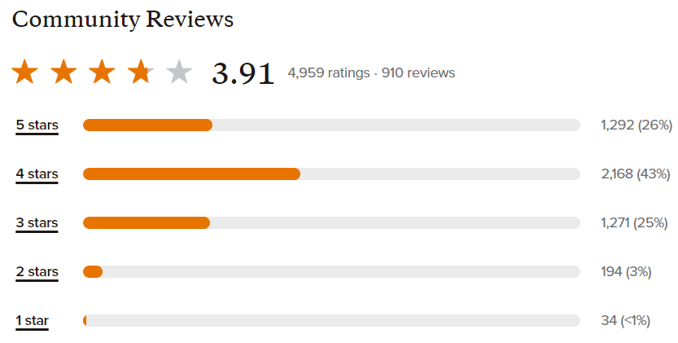
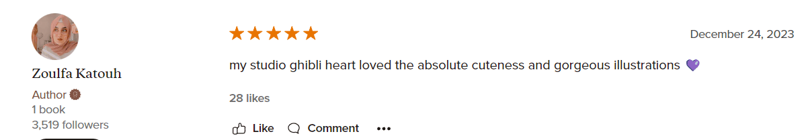
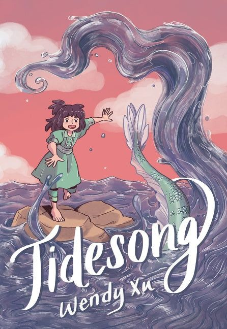
TIDESONG GRAPHIC NOVEL by Wendy Xu, 2021
AUDIENCE RECEPTION: ⭐⭐⭐⭐/5, GOODREADS https://www.goodreads.com/book/show/57094282-tidesong?from_search=true&from_srp=true&qid=Qg03W0UiXH&rank=1
Through its intricate plot and fantastical elements. The story follows Sophie, a young witch pressured by her family to attend the Royal Magic Academy despite her shaky magical abilities. Sent to live with relatives she's never met to train for her entrance exams, Sophie's frustrations lead her to attempt magic on her own, resulting in an accidental entanglement with the magic of a young water dragon named Lir. Lir, trapped on land and struggling to regain his memories, becomes an unlikely ally for Sophie as she navigates her magical training and the challenges of standing up to her family's expectations. Through rich visual imagery, magical encounters, and themes of self-discovery, "Tidesong" immerses readers in a captivating fantasy world that explores the complexities of identity, friendship, and the pursuit of one's true path.
DIFFERENCE BETWEEN FANTASY SUB GENRES...
videos accessed 17/3
SUBGENRE: magic realism
is a style of literary fiction and art. It paints a realistic view of the world while also adding magical elements, often blurring the lines between fantasy and reality. -wikipedia
"Magical realism generally avoids epic grand fantasy. Instead, they look to make magic feel casual and natural in the world of the story, and for the audience. They want to make the magical element feel like something you wouldn't really blink an eye at, something you wouldn't find extraordinary, but mundane instead. Magical realism adds a magical element to a world that is otherwise very similar to ours." - untitled, Aug 1, 2021, https://animesuperhero.com/forums/threads/magical-realism-in-animation.5793793/ , accessed 16/3
GENRE: MAGICAL REALISM
explored through film, photography, novels and comics/graphic novels
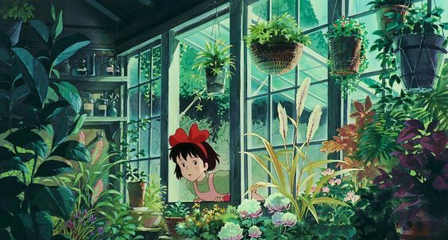
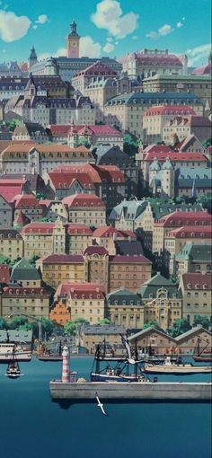
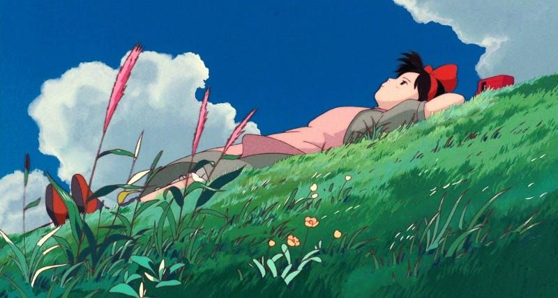
screen excerpts from hayao miyazaki's "kiki's delivery service" (1989)
AUDIENCE RECEPTION: 98% Rotten Tomatoes🍅 // 7.8/10 IMDb // 5/5 Common Sense Media
hayao miyazaki's films create a very whimsical and magical aesthetics in its cinematography, composition, style and especially colour. alluding as an outlet for its viewers. it's feel-atmosphere and very linear narrative surrounds the film in blankets of comfort and nostalgia.
"Kiki's Delivery Service" embodies the essence of magical realism through its portrayal of a young witch named Kiki navigating the challenges of adolescence while running a delivery service in a seaside town. The plot follows Kiki as she interacts with both ordinary people and fantastical creatures, seamlessly blending magical elements—like Kiki's ability to fly on a broomstick—with the mundane realities of growing up. This juxtaposition of the extraordinary and the ordinary creates a sense of wonder and enchantment characteristic of the magical realism genre. Visually, the film employs vibrant colours and whimsical character designs to establish its fantastical world while grounding it in a sense of reality through subtle details and everyday occurrences. Through Kiki's journey of self-discovery, the film explores universal themes of identity, friendship, and personal growth, offering a heartfelt exploration of the joys and challenges of coming of age within a magical yet relatable setting.
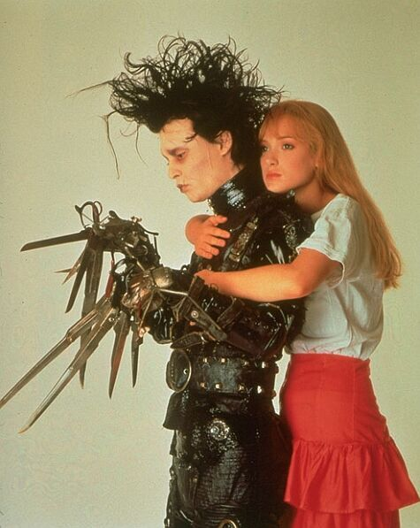
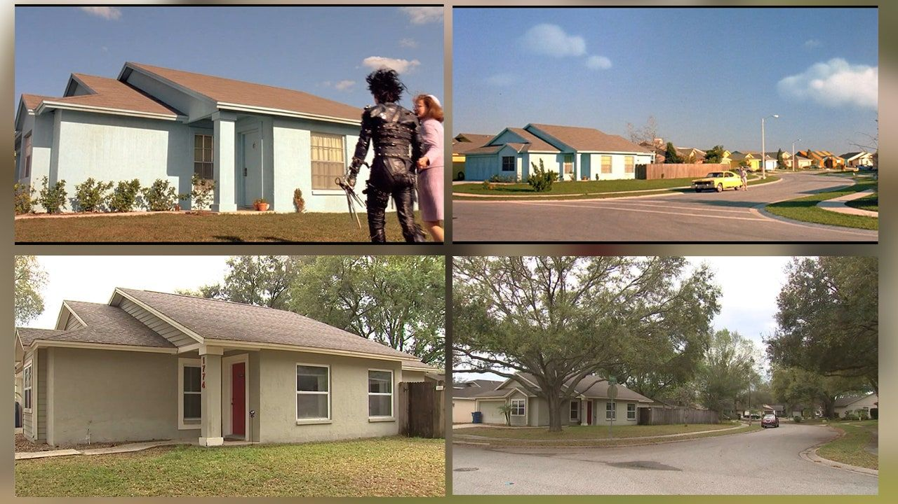
AUDIENCE RECEPTION: 89% Rotten Tomatoes🍅 // 7.9/10 IMDb // 4/5 Common Sense Media
"Edward Scissorhands" is considered a prime example of magical realism in film due to its skillful blending of fantastical elements with a recognizable suburban setting. The film employs various media conventions to emphasize this genre, such as visual imagery, sound design, and character development. Through the use of Tim Burton's signature gothic and whimsical aesthetics, viewers are transported into Edward's fantastical world, where his unique scissorhands and surreal existence are accepted as natural parts of the narrative. The film's atmospheric score further enhances the magical atmosphere, while the development of characters like Edward and the suburban residents adds depth and emotional resonance to the story. By seamlessly integrating fantastical elements into a familiar suburban backdrop, "Edward Scissorhands" effectively captures the essence of magical realism, inviting audiences to suspend disbelief and immerse themselves in a captivating tale of love, identity, and acceptance.
EDWARD SCISSORHANDS, Tim Burton, 1990
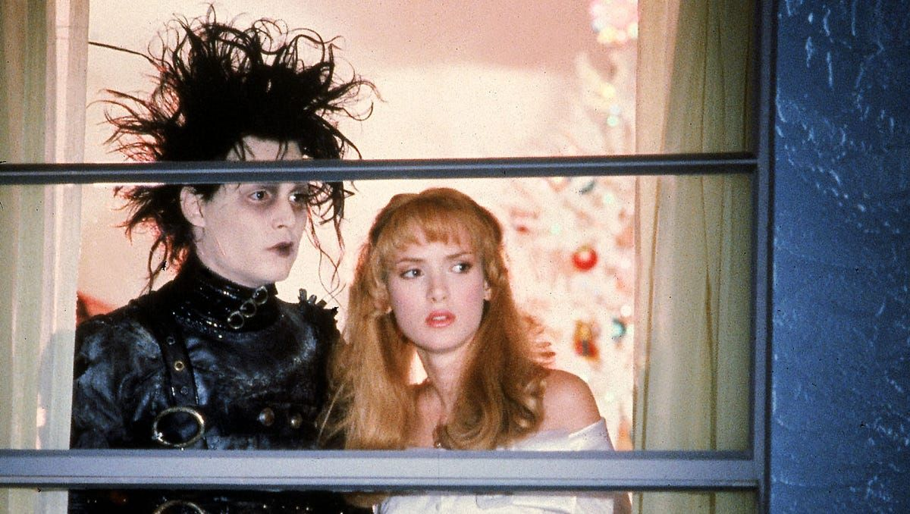
Through codes such as mise-en-scène and cinematography, the fantastical elements of Edward's character are emphasised. Edward's iconic scissorhands, juxtaposed against the suburban backdrop, serve as a visual symbol of his uniqueness and otherness. Additionally, the film's use of lighting and colour, and set design further accentuate the contrast between Edward's magical world and the mundane reality of suburbia. The film's soundtrack, composed by Danny Elfman, enhances the whimsical and ethereal atmosphere, immersing viewers in Edward's enchanting world.
FLYING HENRY, BOOK by Rachel Hulin
In the image, we see a child seemingly floating or flying in mid-air, enveloped in a white sheet or cloth. This fantastical element disrupts the otherwise realistic setting of an expansive field under a partly cloudy sky. The individual’s casual attire and relaxed posture suggest that this extraordinary event is normal within the context of their world.
This juxtaposition of the ordinary and the extraordinary is a key characteristic of magical realism. It serves to blur the line between reality and fantasy, creating a world where magic is part of everyday life. The media codes used in this image, such as the realistic landscape and lighting, contribute to this effect. The person suspended in air introduces an element of magic, enhancing the overall narrative and drawing the viewer into this magically realistic world.
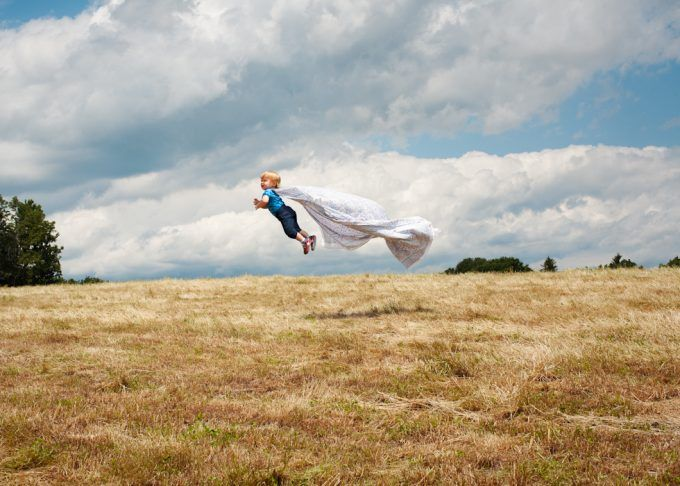
conventions of genre
https://thedramateacher.com/magical-realism/ accessed 23/2
TEMPORAL FLUIDITY
In magical realism, time is often fluid, manifesting as non-linear, cyclical, or ambiguous temporal structures that defy conventional delineations of past, present, and future. This temporal flexibility creates an enchanting atmosphere and facilitates intricate thematic exploration through mechanisms like flashbacks, time loops, and prolepsis.
HOW IS CONVENTION USED TO ENGAGE AUDIENCES? TEMPORAL FLUIDITY is employed to engage audiences by challenging their perceptions of time and reality. By blurring the boundaries between past, present, and future, narratives can unfold in non-linear and unpredictable ways, creating a sense of mystery and intrigue. This allows audiences to experience events from multiple perspectives and explore the interconnectedness of different moments in time. Temporal fluidity invites viewers or readers to actively participate in piecing together the narrative puzzle, stimulating their curiosity and prompting deeper reflection on the nature of existence and the passage of time. Through its ability to transcend conventional notions of chronology, temporal fluidity adds layers of complexity and richness to magical realism narratives, captivating audiences with its enigmatic and immersive storytelling.
HOW DO AUDIENCES USE CONVENTION TO READ MEANING? Audiences are able interpret temporal shifts in magical realism stories as symbolic representations of broader existential themes, such as the cyclical nature of life, the persistence of memory, and the human capacity for transformation.
HOW WOULD I INCOPORATE THIS CONVENTION IN MY OWN PRODUCTION DESIGN? I would incorporate this in my own product by utilising skilled placement of flashback scenes into the past that can help provide contexts to why a certain character may react, and their behaviour; encouraging understanding between narrative and the audience. Similarly maybe glimpses to the future using symbols and references can foreshadow what is to come and leading up to it - mystery element?
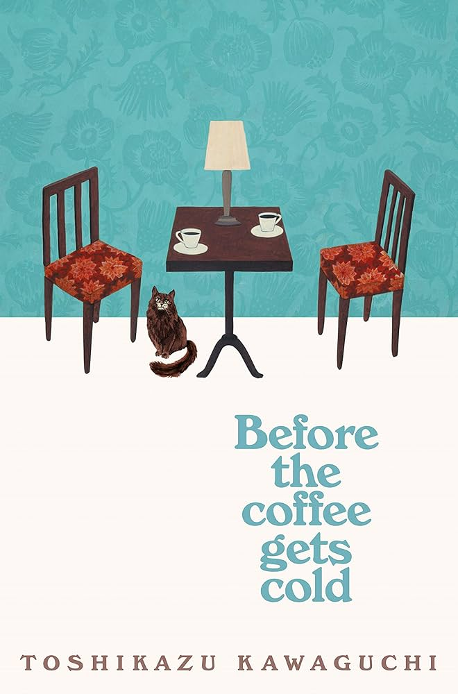
example... BEFORE THE COFFE GETS COLD, BOOK BY Toshikazu Kawaguchi, 2015
AUDIENCE RECEPTION: ⭐⭐⭐⭐/5, GOODREADS https://www.goodreads.com/book/show/44421460-before-the-coffee-gets-cold?ref=nav_sb_ss_1_15
"In a small back alley in Tokyo, there is a café which has been serving carefully brewed coffee for more than one hundred years. But this coffee shop offers its customers a unique experience: the chance to travel back in time."
"Before the Coffee Gets Cold" exemplifies the magical realism genre through its exploration of temporal fluidity and non-linear structure of time-traveling. In the novel, the café setting serves as a portal where customers can travel back in time to revisit moments from their past. This element of temporal fluidity blurs the boundaries between past and present, allowing characters to confront unresolved issues, reconcile with their past selves, and find closure. The non-linear structure of the narrative further enhances this sense of temporal ambiguity, as flashbacks and shifting perspectives interweave to create a multi-layered tapestry of interconnected stories. Through its seamless integration of magical elements into everyday life and its exploration of the complexities of time and memory, "Before the Coffee Gets Cold" captivates readers with its enchanting blend of realism and fantasy, inviting them to ponder the mysteries of existence and the power of human connection across time.
GROUNDED IN REALITY
Unlike traditional fantasy, where magical occurrences exist in an entirely separate world, magical realism integrates supernatural elements into everyday life, often without explanation or disruption to the narrative's realism. This juxtaposition of the ordinary and the extraordinary creates a sense of ambiguity and intrigue, blurring the boundaries between the fantastical and the mundane
HOW IS CONVENTION USED TO ENGAGE AUDIENCES? Engage audiences by creating a sense of familiarity amidst fantastical elements. By anchoring the narrative in a realistic world with relatable settings, audiences are drawn into the story more deeply, allowing them to connect emotionally with the fantastical elements. This blending of the ordinary and the extraordinary serves to blur the lines between reality and fantasy, encouraging audiences to suspend disbelief and immerse themselves fully in the narrative. Grounding magical realism in reality also enables storytellers to explore complex themes and social issues within a familiar context, prompting audiences to reflect on the human condition and the intricacies of everyday life. Through its ability to seamlessly integrate magical elements into real-world settings, the magical realism genre captivates audiences with its unique blend of enchantment and authenticity.
HOW DO AUDIENCES USE CONVENTION TO READ MEANING? By presenting magical occurrences within the context of everyday life, magical realism invites audiences to reflect on deeper themes and messages embedded within the narrative. For example, fantastical events may serve as metaphors for complex emotions, societal issues, or existential questions. Audiences interpret these elements through their own lived experiences, drawing connections between the magical and the mundane to derive meaning from the story.
HOW WOULD I INCOPORATE THIS CONVENTION IN MY OWN PRODUCTION DESIGN? Simply grounding the setting and background in a realistic reality, with architecture, fashion, and landscaping that mirrors reality; urban and city elements. Even taking my own experiences so that the narrative can be more relatable with audience, and they too will draw upon their own experiences when reading story.
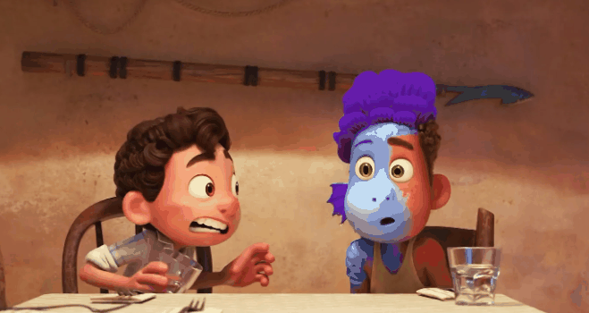
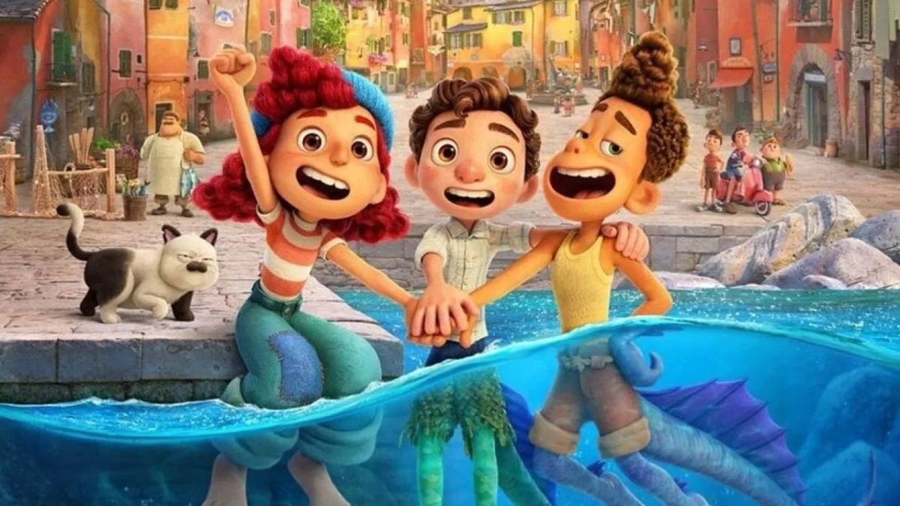
example...
LUCA, A Walt Disney and Pixar FILM, 2021
AUDIENCE RECEPTION: 91% Rotten Tomatoes🍅 // 7.4/10 IMDb // 71% Metacritic
"Luca" is considered part of the magical realism genre despite being grounded in reality, as it skilfully intertwines elements of fantasy with a recognizable setting. In the film, the coastal town of Portorosso serves as the backdrop for the protagonist Luca's coming-of-age journey. While the town and its inhabitants appear ordinary at first glance, the discovery that Luca and his friend Alberto are sea monsters who transform into humans when dry adds a fantastical twist to the narrative. Despite this magical element, the film remains grounded in reality through its portrayal of themes such as friendship, identity, and acceptance. The characters' emotional struggles and personal growth resonate with real-life experiences, allowing audiences to connect with the story on a deeper level. Through its seamless integration of fantasy and reality, "Luca" exemplifies the conventions of magical realism, inviting viewers to explore the wonders of imagination while reflecting on the complexities of the human experience.
MAGIC!
no explanation no structure of the magical oddities blurring lines between fiction and fantasy; dreamlike narrative no rational sense however never questions
HOW IS CONVENTION USED TO ENGAGE AUDIENCES? Engage audiences by infusing the narrative with a sense of wonder and enchantment. Through the inclusion of magical elements, audiences are transported to worlds where the extraordinary coexists with the ordinary, sparking their imagination and prompting contemplation of the mysteries of existence. Ultimately, the presence of magic in magical realism captivates audiences by offering a unique and captivating storytelling experience that transcends the confines of reality.
HOW DO AUDIENCES USE CONVENTION TO READ MEANING? Ultimately, audiences use the inclusion of magical elements in magical realism to read meaning by engaging with the story on both a literal and metaphorical level, uncovering hidden truths and resonating with the narrative on a deeper, more profound level. Audiences may interpret magical elements as metaphors for complex emotions, societal issues, or existential questions, drawing connections between the fantastical and the real to derive insights and understanding.
HOW WOULD I INCOPORATE THIS CONVENTION IN MY OWN PRODUCTION DESIGN? Obviously adding mysteriously fantastical and magical elements, through cursed objects, speaking entities and flowers or even magic portals that lead you to a completely different place.
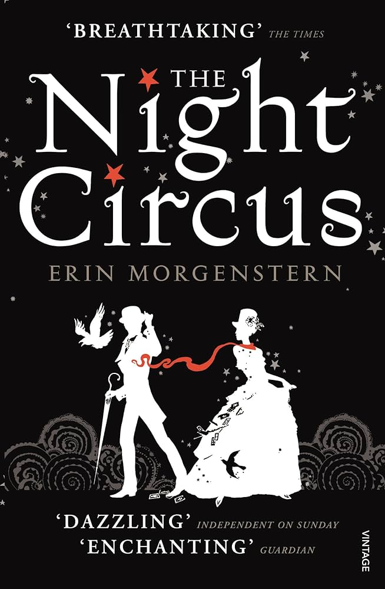
example... THE NIGHT CIRCUS, BOOK BY Erin Morgenstern, 2011
AUDIENCE RECEPTION: ⭐⭐⭐⭐/5, GOODREADS https://www.goodreads.com/book/show/9361589-the-night-circus
"The circus arrives without warning. No announcements precede it. It is simply there, when yesterday it was not. Within the black-and-white striped canvas tents is an utterly unique experience full of breathtaking amazements. It is called Le Cirque des Rêves, and it is only open at night."
"The Night Circus" despite being a novel about magic distinguishes itself from traditional fantasy by its nuanced portrayal of magical elements within a realistic setting. Set in various locations across Europe, including London, Paris, and Munich, during the late 19th and early 20th centuries, ultimately grounded in ahistorical Victorian London. Serving as the backdrop for the fantastical events and magical elements that are seamlessly woven into everyday life, coexisting with the mundane world in a way that blurs the lines between reality and fantasy. Moreover, the existence of magic is treated as a natural part of the characters' reality, rather than an extraordinary occurrence to be scrutinized or doubted. Throughout the novel, readers encounter a variety of magical phenomena within the confines of Le Cirque des Rêves, from illusions and enchantments to feats of telekinesis and shape-shifting. These fantastical elements are presented matter-of-factly, with characters and readers alike accepting them as normal occurrences within the world of the circus. By blurring the lines between fantasy and reality in this way, "The Night Circus" creates a sense of wonder and enchantment that permeates every aspect of the narrative, inviting readers to suspend disbelief and immerse themselves fully in the magical realm of the circus.
SOCIAL COMMENTARY
uses magical factor to bring forward progressive ideas and political commentary commitment to reality on grave subjects
HOW IS CONVENTION USED TO ENGAGE AUDIENCES? By weaving social commentary into magical realism stories, storytellers are able to address complex societal themes and critique prevailing norms and ideologies in a subtle yet impactful manner. Through the inclusion of social commentary, magical realism invites audiences to consider the implications of societal structures, cultural practices, and political systems, encouraging empathy, critical thinking, and dialogue about pressing social concerns. Ultimately, the integration of social commentary into magical realism serves to engage audiences by offering thought-provoking narratives that resonate with the complexities of the human experience.
HOW DO AUDIENCES USE CONVENTION TO READ MEANING? Including social commentary in the magical realism genre to read meaning by interpreting the fantastical elements as symbolic representations of real-world social issues and injustices. For example, magical elements may serve as metaphors for systemic oppression, cultural hegemony, or the consequences of environmental degradation. Audiences draw connections between these fantastical occurrences and their own lived experiences, prompting critical reflection on the complexities of society and the human condition. Additionally, the inclusion of social commentary encourages audiences to consider alternative perspectives and empathize with marginalized communities, fostering greater understanding and awareness of social injustices.
HOW WOULD I INCOPORATE THIS CONVENTION IN MY OWN PRODUCTION DESIGN? Within narrative, I could subtly incorporate themes of racism and injustices whether upfront, or using the magical element to my advantage and having them represent or be and allegory/metaphor to these social commentaries so as to not completely overpower narrative.
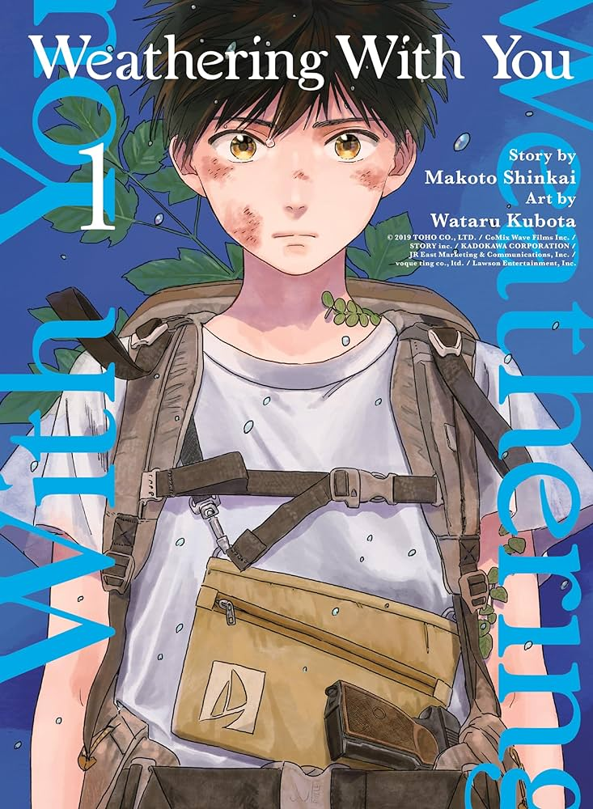
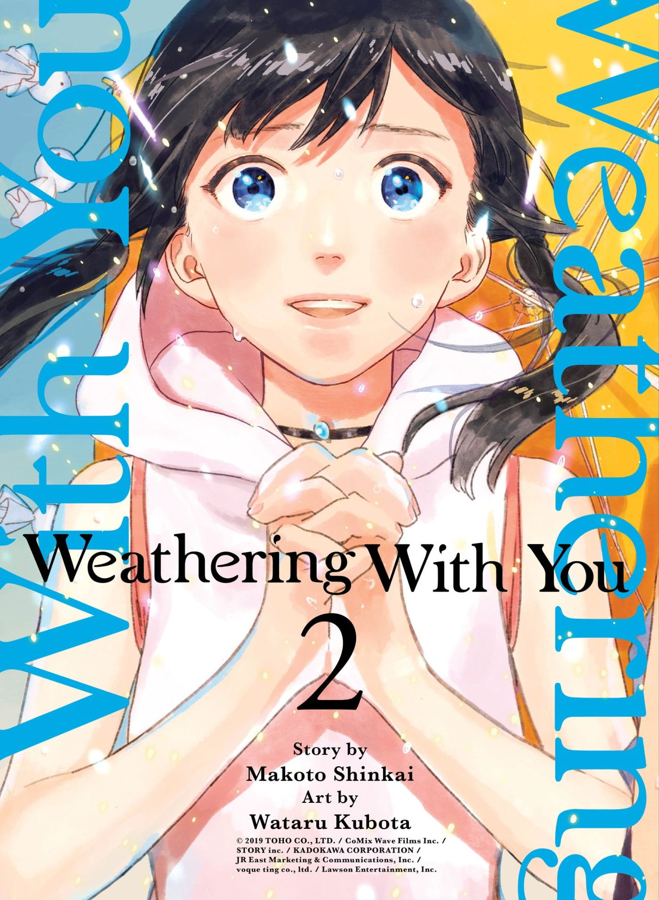
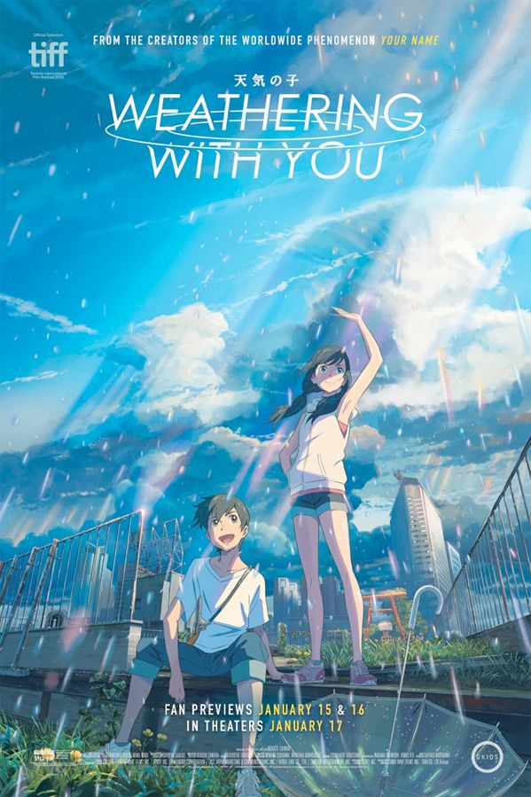
example... WEATHERING WITH YOU, A Makoto Shinkai FILM, 2019
AUDIENCE RECEPTION: 92% Rotten Tomatoes🍅 // 7.5/10 IMDb // 4/5 Common Sense Media
"Weathering with You" is part of the magical realism genre due to its incorporation of fantastical elements into a realistic setting, specifically the ability to control the weather. The film follows Hodaka, a teenage boy who encounters Hina, a girl with the supernatural ability to manipulate the weather. This magical element serves as a central focus of the narrative, blurring the lines between reality and fantasy. However, beyond its magical elements, "Weathering with You" also serves as a social commentary on environmental themes, particularly the consequences of climate change and humanity's impact on the environment. The perpetual rain and flooding depicted in the film serve as metaphors for real-world environmental issues, prompting viewers to reflect on the consequences of environmental degradation and the importance of taking action to mitigate climate change. Additionally, it explores issues of youth unemployment, economic inequality, and the struggles of marginalized communities in urban settings. By weaving these themes into its narrative, "Weathering with You" invites viewers to reflect on broader social issues while experiencing its magical and romantic storyline.
RELATIONSHIP B/W MAGICAL REALISM & COMING OF AGE
The relationship between the genres of magical realism and coming of age is a rich and compelling one, often intertwining to create narratives that blend elements of the fantastical with the personal growth and self-discovery typical of the coming-of-age journey. In magical realism, the boundaries between the mundane and the magical are blurred, allowing fantastical elements to seamlessly coexist with everyday life. This genre often serves as a metaphorical backdrop for characters to navigate the complexities of adolescence and young adulthood, where the magical elements mirror the internal struggles, emotions, and transformations experienced by the protagonist. Coming-of-age stories, on the other hand, focus on the protagonist's journey of self-discovery, as they grapple with identity, relationships, and the transition from childhood to adulthood. When combined, magical realism adds depth and whimsy to the coming-of-age narrative, offering unique opportunities for characters to explore their inner worlds and confront external challenges in fantastical settings. Through this blend of genres, readers are invited to embark on transformative journeys alongside characters who navigate both the extraordinary and the ordinary, ultimately emerging with newfound wisdom and understanding.
HOW ARE AUDIENCES ENGAGED BY THESE TWO GENRES?
Audiences are captivated by the hybridized genre of magical realism and coming of age through its captivating blend of fantastical elements and relatable human experiences. The incorporation of magical or surreal elements adds an extra layer of intrigue and wonder to the coming-of-age narrative, transporting viewers into a world where anything is possible. These fantastical elements serve as metaphors for the protagonist's inner journey, allowing audiences to empathize with their struggles and triumphs on a deeper, symbolic level. Furthermore, the fusion of genres creates a richly textured storytelling experience that appeals to a diverse audience. Fantasy enthusiasts are drawn to the allure of magical worlds, while fans of introspective character-driven narratives find resonance in the emotional depth of the coming-of-age genre. The ambiguity of magical realism invites audiences to actively engage with the narrative, deciphering the meaning behind the fantastical elements and their connection to the protagonist's journey of self-discovery. This engagement fosters a deeper appreciation for the themes and messages embedded within the story, encouraging reflection on personal experiences and perspectives. Overall, the hybridised genre of magical realism and coming of age offers audiences a captivating and thought-provoking storytelling experience that resonates on both an emotional and intellectual level.
HOW WILL AUDIENCES BE ABLE TO READ MEANING THROUGH THESE TWO GENRES?
Through the lens of magical realism, viewers are presented with a world where extraordinary occurrences coexist with the ordinary, blurring the lines between reality and fantasy. This allows for allegorical interpretations of the characters' emotional and psychological development, as they navigate the complexities of adolescence amidst surreal and enchanting circumstances. The fusion of these genres enables audiences to explore universal themes such as identity, belonging, and the transition to adulthood in a thought-provoking and emotionally resonant manner. By intertwining the magical and the mundane, creators offer audiences a multifaceted narrative experience that encourages introspection, empathy, and a deeper understanding of the human condition.